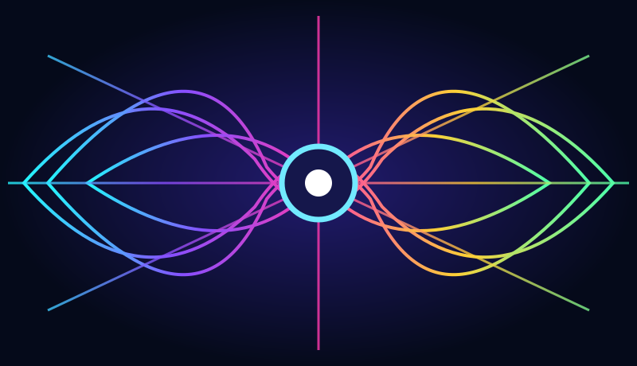

Spectral Lab

This is a design preview. The interactive instrument is not connected yet; the latest working source is needed before launch.
© MATTBEAR

This is a design preview. The interactive instrument is not connected yet; the latest working source is needed before launch.
© MATTBEAR